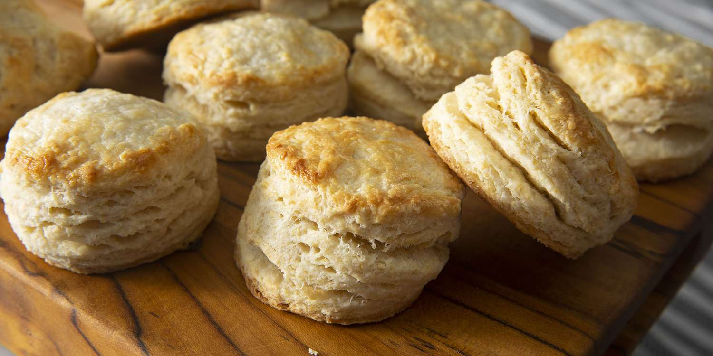

Homemade Buttermilk Biscuits

Description
There is nothing quite like warm, flaky, buttermilk biscuits served fresh from the oven! Whip up these biscuits with a few simple pantry staples, a touch of butter, and creamy buttermilk for an effortless and delicious treat. Spread them with lots of butter, homemade jam, or smother them in sausage gravy.
Ingredients
- Flour
- Baking Powder
- Butter
- Baking Soda
- Buttermilk
- Sugar
Steps
- Combine dry ingredients according to the recipe below.
- Cut in the butter until crumbly. Stir in buttermilk until moistened.
- Knead the dough gently and fold over a few times to create layers.
- Cut with biscuit cutter or a sharp knife and bake until golden brown.